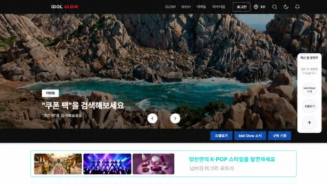
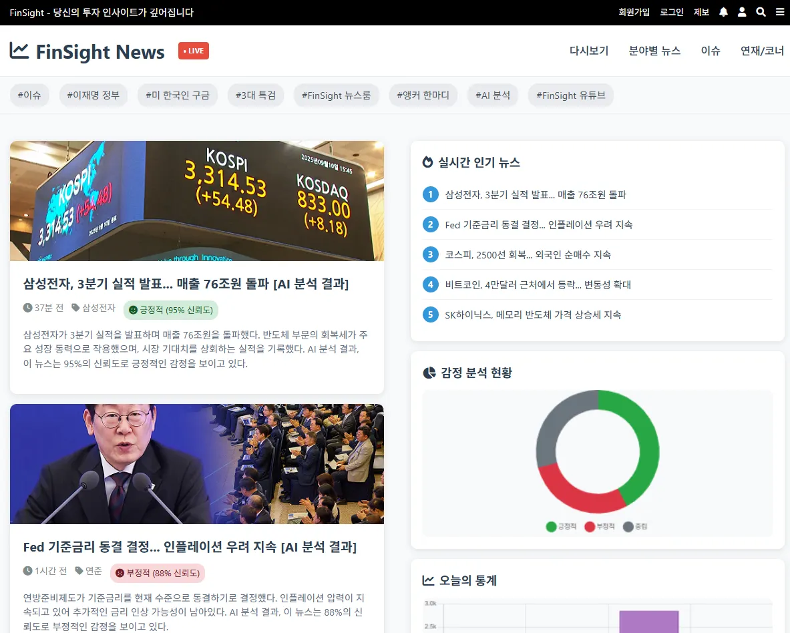
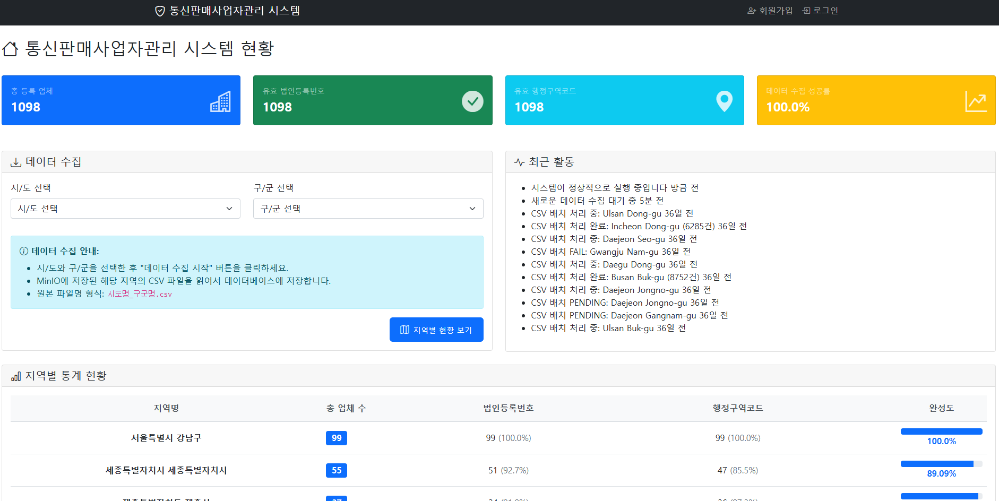
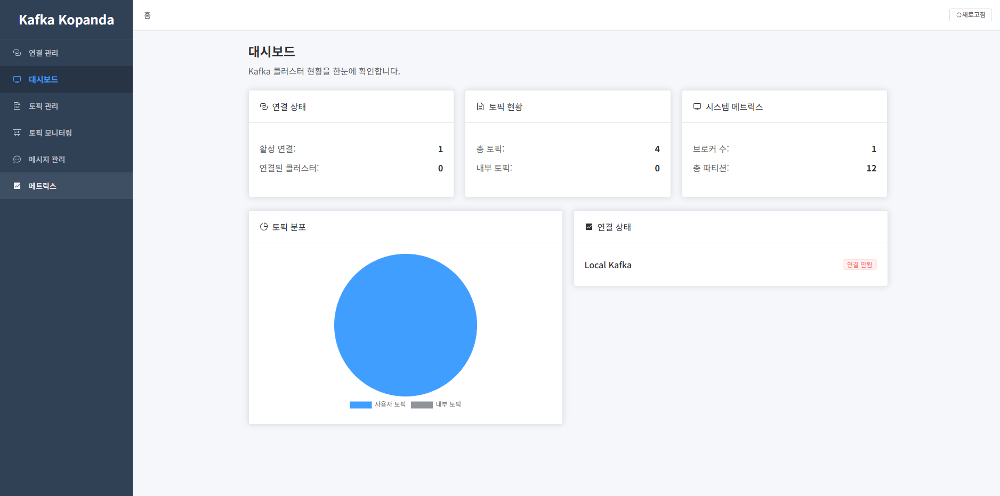
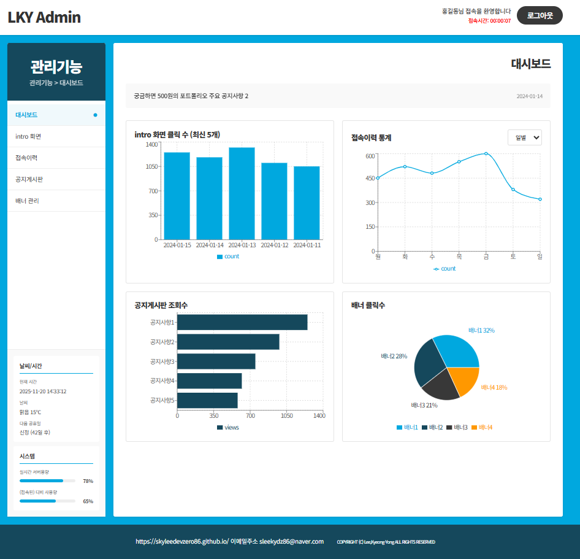
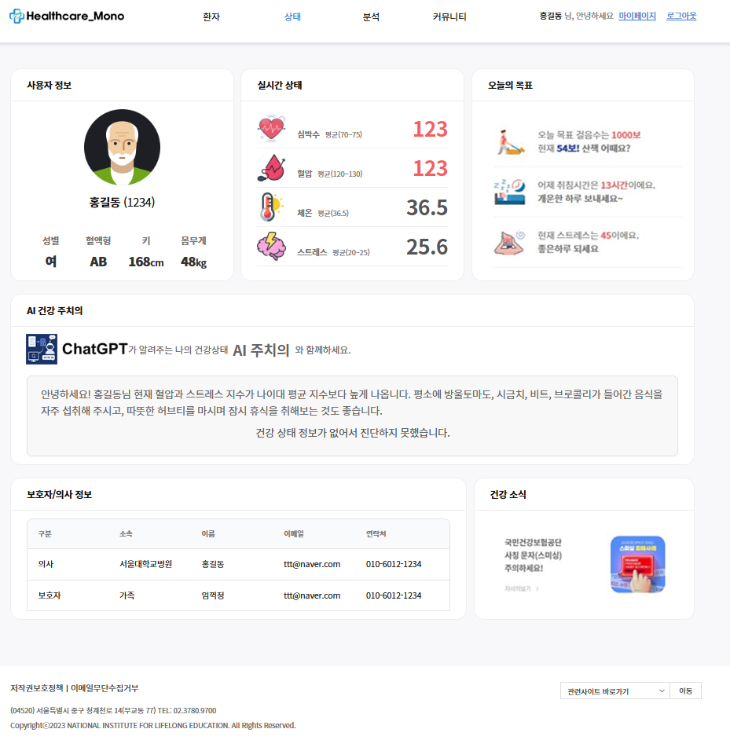
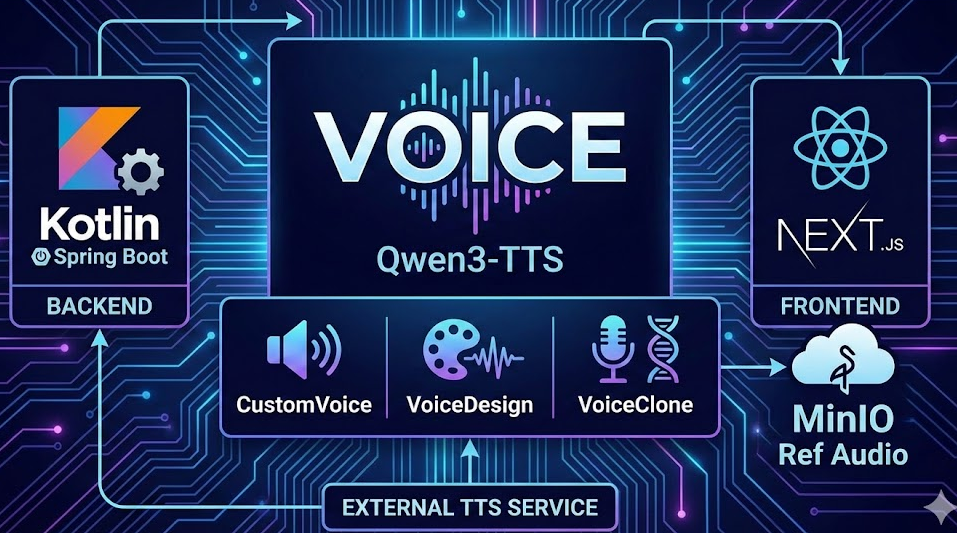

궁금하면500원입니다.
병원 연구 시스템과 공공기관 시스템을 5년 6개월 개발·운영했고, 지금은 결제와 데이터 통합 백엔드를 개인 프로젝트로 깊게 파고 있습니다.
연구자나 의뢰 업체가 이미 승인된 보고서를 다시 내거나 승인 뒤 내용을 고치는 일이 있었습니다. 승인 후 수정 잠금을 걸고, 저장 프로시저에서 원본을 저장할 때 같은 값을 로그 테이블에 남겼습니다. 유니크 제약으로 중복 저장을 막고, 조작이나 수정된 건은 관리자 목록에 빨간색으로 표시했습니다. 적용 뒤 중복 건수가 크게 줄었습니다.
3초 걸리던 실험 보고서 조회를 쿼리와 인덱스를 고쳐 200ms로 줄였습니다.
본원과 분원 데이터를 기관 그룹 코드와 기관 구분 코드로 나누는 멀티 테넌트 구조를 중앙대학교병원과 부산대 그룹 시스템에 직접 구축했습니다.
실무 경력
병원 연구 시스템 (IRB·CTMS·IACUC)
공공기관 콜센터 시스템
IdolGlow 자동화 테스트 통과

공공 공연·축제 API 5종(KOPIS 공연·축제, 세종문화회관, 문화정보, 한국관광공사 Tour API)의 외부 ID를 내부 기준 ID 하나로 통합하고, 충돌 후보는 자동 병합하지 않고 검토로 보류합니다. 슬롯 예약과 토스페이먼츠 결제·정기결제에서 잠금 순서 고정, 외부 호출과 트랜잭션 분리, 타임아웃 결과의 대기 처리 후 조회 확정으로 정합성을 다룹니다. 테스트 304개 통과.

경제·시장 뉴스를 수집해 AI 감성 분석과 함께 제공하는 서비스입니다. web·core·batch 멀티모듈 백엔드에서 제공처별 실패 격리, URL 정규화와 유니크제약으로 중복 저장을 막고, AI 장애 시 대체 모델과 서킷 브레이커로 대응합니다. Elasticsearch(nori)로 통합 검색을 제공합니다.

공공데이터 수집 및 관리 시스템으로, 법인 정보 검색, 회원 관리, 파일 관리, 대시보드, 법인정보 수집 및 Excel 내보내기 등의 핵심 기능을 제공

연결 관리, 토픽 관리, 메시지 처리, 실시간 모니터링, 알림 시스템을 통해 Kafka 인프라를 효율적으로 운영할 수 있는 웹 기반 솔루션

이 포트폴리오 사이트입니다. 주요 프로젝트와 경력 프로젝트를 소개합니다.

바이오 데이터를 활용하여 사용자의 건강 상태를 분석하고 ChatGPT API를 통한 건강 조언을 제공하는 MSA 기반 헬스케어 시스템
Kotlin + Spring Boot 기반 음성 메모 / STT·TTS 웹 애플리케이션으로, Groq API(Whisper STT, PlayAI TTS)를 활용해 음성-텍스트 변환 및 텍스트-음성 생성을 제공합니다.

Qwen3-TTS 기반 텍스트-음성 합성(TTS) 웹 애플리케이션입니다. CustomVoice·VoiceDesign·VoiceClone을 지원하며, Kotlin Spring Boot 백엔드와 Next.js 프론트엔드로 구성됩니다. 참조 음성 MinIO 업로드 및 WAV 스트리밍을 제공합니다.
AI 기반 상품 설명·벡터 검색과 실시간 AI 채팅, 배치 메일을 지원하는 우리동네 중고거래 플랫폼입니다. market-api·market-chat·market-batch 마이크로서비스와 Next.js로 구성되며, Spring AI(GLM-4.7), MySQL, Redis, MinIO/S3를 활용합니다.
EMR(전자의무기록) 시스템 — Java/Spring Boot 기반 멀티모듈 백엔드. 임상(emr-clinical)·재무(emr-finance)·지원(emr-support) 도메인 분리, emr-core·emr-domain 공통 인프라로 구성되며, 예약·진료·처방·입원, 수가/결제·의료급여 연동, 게시판·근태·장비 연동 등을 지원합니다.
위치 기반 메시지·위치 추적 풀스택 샘플. Backend(Kotlin + Spring Boot), Web(Vue 3 + Vite), Mobile(Expo/React Native) 구성. Clean Architecture/DDD 스타일, MySQL·REST API·지도·알림 지원.
• IdolGlow: 공공 공연 API 5종 메타데이터 통합, 예약·토스 결제 정합성 (테스트 304개 통과)
• FinSight: 뉴스 수집 배치 중복 제거·장애 격리, Elasticsearch 통합 검색
• 기술 블로그 운영
• 인터넷뱅킹 기능 개발
• 차세대 시스템 개발 테스트 업무지원
• 비대면 금융 서비스 확대 및 신규 카드 상품 개발
• OTP 인증 및 카카오페이 연계 기능 리팩토링 및 개선
• 화학물질 시험분석 의뢰 관리 시스템 (CHIMS) 개발
• 국가식품클러스터 메인 홈페이지 마이그레이션
• 곡성군청 메인 홈페이지, 보건의료원, 곡성군섬진강 천문대
고도화/재개편
• 광주청년센터, 지리산 둘레보고 유지보수 업무 지원
• 경찰대학교 치안 홈페이지 유지보수
• 대학 병원통합연구지원시스템
개발(중앙대,부산대,전남대,부산양산)
• 서울아산병원통합연구시스템 개발/운영
• 프로젝트 관리 시스템 구축 및 고객 협업 프로세스 개선
• 헬스케어 시스템 패키지 CTMS(임상연구관리시스템),
IACUC(전임상실험관리시스템), IRB(임상윤리연구시스템) 개발
• 상담 어플리케이션 개발
• 아시아문화전당 유지보수
• 콜센터 웹 개발 어플리케이션 고도화
• 의료용 상호작용형3D vR/ar 서비스 플랫폼 개발